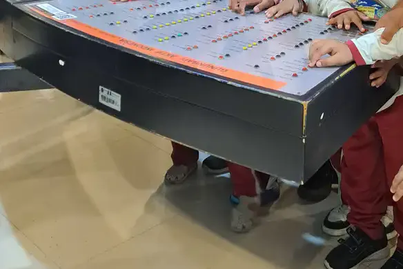
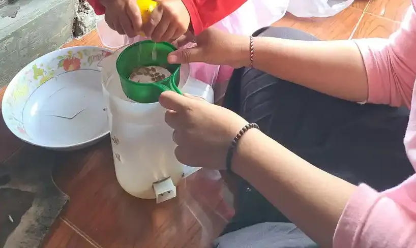
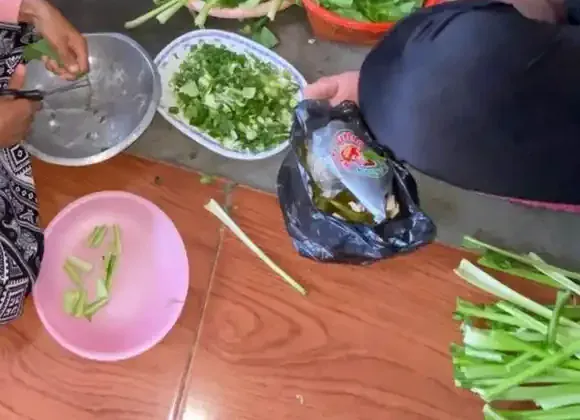

Daftar Isi
- Mengapa Tahapan Bermain Penting untuk Dipahami
- Enam Tahapan Bermain Sosial Menurut Parten (1932)
- Tipe Bermain Menurut Smilansky dan Piaget
- Patokan Usia: Apa Kata Daftar Tonggak Perkembangan CDC
- Bagaimana Anak Berkebutuhan Khusus Melalui Tahapan Bermain
- Cara Mendampingi Anak Naik ke Tahap Berikutnya
- Peran Guru dan Sekolah Inklusi
- Kesalahan Umum Saat Menilai Tahapan Bermain
- Pertanyaan yang Sering Diajukan
Banyak orang tua bertanya, "Kenapa anak saya belum mau main bersama temannya?" Pertanyaan ini wajar, apalagi ketika anak lain seusianya sudah asyik bermain peran atau bergiliran dalam permainan. Artikel ini menjelaskan tahapan perkembangan bermain anak, dua cara populer untuk memetakannya (tahapan sosial Parten dan tipe bermain Smilansky), apa yang diketahui riset tentang pola bermain anak berkebutuhan khusus, serta cara mendampingi anak di rumah dan di sekolah.
Satu hal perlu ditegaskan sejak awal: artikel ini bukan alat diagnosis. Tahapan bermain membantu kita mengamati, bukan memberi label. Kalau Anda sedang menyiapkan pertemuan bermain dengan anak lain, panduan praktisnya ada di artikel play date untuk anak berkebutuhan khusus. Di sini fokus kita adalah peta tahapannya.
Mengapa Tahapan Bermain Penting untuk Dipahami
Bermain bukan sekadar mengisi waktu. American Academy of Pediatrics (AAP), lewat laporan klinis The Power of Play yang dirangkum di HealthyChildren.org, menyebut riset menunjukkan bermain dapat meningkatkan kemampuan anak merencanakan, mengatur, bergaul dengan orang lain, dan mengelola emosi. Bermain juga membantu bahasa, matematika, dan keterampilan sosial, bahkan membantu anak menghadapi stres.
Hubungan bermain dan bahasa juga tercatat dalam penelitian. Mohan dan rekan (2021) di Psychology Research and Behavior Management merangkum bahwa bermain simbolis atau pura-pura memiliki korelasi tinggi dengan bahasa, dan bermain pura-pura juga berkaitan dengan kemampuan bercerita, pengaturan emosi, fungsi eksekutif, fungsi sosial, penalaran, dan pemecahan masalah. Perlu dicatat, korelasi berarti keduanya berjalan bersama, belum tentu yang satu menyebabkan yang lain.
Karena itu, memahami tahap bermain anak memberi kita titik awal yang jelas. Kalau kita tahu anak sedang di tahap bermain berdampingan, kita tidak akan berharap ia langsung memimpin permainan kelompok. Kita bisa menyiapkan langkah berikutnya yang masuk akal. Pendekatan ini sejalan dengan prinsip intervensi dini: dukungan dimulai dari kemampuan anak saat ini.
Enam Tahapan Bermain Sosial Menurut Parten (1932)
Mildred Parten mengamati anak prasekolah dan mengelompokkan perilaku bermain sosial mereka. Lee dan rekan (2022), dalam jurnal Healthcare, menuliskan bahwa Parten mengklasifikasikan bermain sosial anak menjadi perilaku tidak terlibat, perilaku menonton, bermain sendiri, bermain berdampingan, bermain asosiatif, dan bermain kooperatif. Bermain asosiatif dan kooperatif melibatkan interaksi yang lebih kompleks.
Schuchert dan rekan (2024) di Clinical Child Psychology and Psychiatry menjelaskan bahwa pada perkembangan tipikal, tahapan sosial ini terbentang dari masa bayi sampai usia lima tahun. Anak pada umumnya menunjukkan bermain sendiri dan menonton sekitar usia 2,5 tahun, mencapai bermain asosiatif sekitar usia 4 tahun, dan kooperatif sekitar usia 5 tahun. Mereka juga mencatat kritik terhadap Parten: tahap asosiatif dan kooperatif sulit dipisahkan, dan cara bermain bisa berbeda antarbudaya.
| Tahap | Seperti apa | Contoh yang mungkin terlihat | Langkah pendampingan |
|---|---|---|---|
| Tidak terlibat (unoccupied) | Anak belum terlibat dalam kegiatan bermain tertentu | Berjalan berkeliling, memperhatikan benda sebentar lalu berpindah | Sediakan sedikit pilihan mainan yang menarik, tunjukkan cara memakainya |
| Menonton (onlooker) | Anak memperhatikan anak lain bermain tanpa ikut | Berdiri di pinggir dan melihat teman menyusun balok | Biarkan anak menonton, beri nama apa yang ia lihat, tawarkan duduk lebih dekat |
| Bermain sendiri (solitary) | Anak bermain dengan mainannya sendiri | Asyik menjajarkan mobil mainan di pojok ruangan | Ikut duduk di dekatnya, tiru permainannya tanpa mengambil alih |
| Berdampingan (parallel) | Anak bermain di dekat anak lain dengan bahan serupa, tetapi masing-masing | Dua anak mewarnai di meja yang sama tanpa saling bicara | Siapkan bahan bersama, misalnya satu wadah krayon untuk berdua |
| Asosiatif (associative) | Anak bermain bersama, berbagi alat atau obrolan, belum ada tujuan bersama | Saling meminjam sekop di bak pasir sambil mengomentari | Latih kalimat meminta dan menawarkan, pujilah saat anak berbagi |
| Kooperatif (cooperative) | Anak bekerja sama menuju satu tujuan atau mengikuti peran dan aturan | Membangun satu menara bersama atau bermain peran toko | Beri peran yang jelas dan aturan sederhana, gunakan gambar bila perlu |
Tabel di atas adalah bantuan mengamati. Kolom contoh dan langkah pendampingan adalah ringkasan praktik umum dari tim YUKA, bukan kriteria penilaian baku. Satu anak bisa terlihat di beberapa tahap pada hari yang sama, tergantung tempat, suasana hati, dan siapa yang ada di sekitarnya.

Tipe Bermain Menurut Smilansky dan Piaget
Tahapan Parten menjawab pertanyaan "dengan siapa anak bermain". Ada cara lain untuk melihat bermain, yaitu dari isinya: "bermain apa". Mohan dan rekan (2021) mencatat bahwa Smilansky mengelompokkan bermain menjadi empat tipe, yaitu bermain konstruktif, bermain fungsional, bermain dramatis, dan permainan dengan aturan. Schuchert dan rekan (2024) juga menyebut permainan dengan aturan sebagai salah satu bentuk bermain yang dibahas Piaget (1952).
| Tipe bermain | Isi kegiatannya | Contoh sederhana | Kemampuan yang ikut dilatih |
|---|---|---|---|
| Fungsional | Mengulang gerakan atau memakai benda sesuai fungsinya | Mendorong mobil mainan, memukul gendang | Koordinasi gerak, sebab dan akibat |
| Konstruktif | Membuat atau menyusun sesuatu | Menyusun balok, membentuk adonan mainan | Perencanaan, motorik halus, ketekunan |
| Dramatis atau pura-pura | Memakai benda atau diri sendiri sebagai simbol | Pura-pura memasak, berperan menjadi guru | Bahasa, memahami sudut pandang orang lain |
| Permainan dengan aturan | Mengikuti aturan yang disepakati dan bergiliran | Ular tangga, petak umpet sederhana | Menunggu giliran, menerima kalah dan menang |
Kolom kemampuan di tabel ini adalah gambaran umum, bukan hasil pengukuran. Menggabungkan kedua peta membantu kita lebih tepat. Misalnya, seorang anak mungkin sudah lancar bermain konstruktif seperti menyusun balok yang rumit, tetapi masih melakukannya sendirian. Langkah berikutnya untuk anak ini bukan mengajari menyusun balok, melainkan mengajak satu teman ikut menambah satu balok.
HealthyChildren.org (AAP) menjelaskan bahwa balita mulai bisa berpikir dengan simbol, sedangkan anak prasekolah mulai berpura-pura menjadi dokter atau pemadam kebakaran. Laman yang sama mencatat bahwa anak yang cara berpikirnya kaku mungkin menolak bermain pura-pura, sehingga orang tua disarankan membuatnya menyenangkan atau lucu. Saran ini relevan untuk banyak anak berkebutuhan khusus yang lebih nyaman dengan hal yang nyata dan terduga.

Patokan Usia: Apa Kata Daftar Tonggak Perkembangan CDC
Daftar tonggak perkembangan CDC (program Learn the Signs. Act Early.) memuat beberapa kemampuan bermain. CDC menjelaskan bahwa tonggak perkembangan adalah hal yang bisa dilakukan sebagian besar anak (75 persen atau lebih) pada usia tertentu. Artinya, daftar ini menggambarkan kebanyakan anak, bukan semua anak.
| Usia | Kemampuan yang dilakukan sebagian besar anak | Kaitan dengan tahapan bermain |
|---|---|---|
| 18 bulan | Meniru orang tua mengerjakan pekerjaan rumah, seperti menyapu; bermain dengan mainan secara sederhana, seperti mendorong mobil mainan | Bermain fungsional, awal meniru |
| 2 tahun | Bermain dengan lebih dari satu mainan sekaligus, seperti menaruh makanan mainan di piring mainan | Awal bermain pura-pura dan konstruktif |
| 3 tahun | Memperhatikan anak lain dan ikut bergabung bermain | Dari menonton dan berdampingan menuju asosiatif |
| 4 tahun | Berpura-pura menjadi sesuatu saat bermain (guru, pahlawan super, anjing); meminta bermain dengan anak lain bila tidak ada teman | Bermain dramatis, asosiatif |
| 5 tahun | Mengikuti aturan atau bergiliran saat bermain permainan bersama anak lain | Kooperatif, permainan dengan aturan |
Daftar ini paling berguna sebagai bahan percakapan dengan tenaga kesehatan, bukan sebagai ujian. Kalau anak belum melakukan beberapa hal sesuai usianya, atau Anda merasa ada masalah dengan cara anak bermain, belajar, berbicara, bertindak, dan bergerak, CDC menyarankan untuk membicarakannya dengan dokter anak dan tidak menunggu. Di Indonesia, pemantauan tumbuh kembang bisa dimulai dari Puskesmas dan Buku KIA; langkahnya dijelaskan di langkah-langkah deteksi dini tumbuh kembang anak. Penjelasan umum tentang tonggak perkembangan ada di artikel milestone anak.
Bagaimana Anak Berkebutuhan Khusus Melalui Tahapan Bermain
Apa yang diketahui riset tentang pola bermain anak berkebutuhan khusus? Munambah dan rekan (2020) melakukan tinjauan sistematis terhadap studi yang membandingkan bermain anak dengan kebutuhan kesehatan khusus dan anak dengan perkembangan tipikal. Dari 18 studi yang memenuhi syarat, 13 melaporkan anak dengan kebutuhan kesehatan khusus lebih sedikit bermain. Penulis juga menyimpulkan bahwa kelompok ini rata-rata kurang playful dan lebih singkat waktu bermainnya.
Tabel rangkuman dalam tinjauan yang sama memberi gambaran lebih rinci, walaupun tiap temuan hanya didukung sedikit studi. Pada anak dengan keterlambatan perkembangan dan disabilitas lain, dua studi mencatat lebih banyak bermain sendiri atau berdampingan, dua studi mencatat lebih sedikit bermain kooperatif, dan dua studi mencatat lebih sedikit bermain pura-pura. Pada anak dengan ADHD, tiga studi mencatat lebih sedikit bermain sosial. Penulis mengingatkan bahwa semua studi yang ditinjau berisiko bias karena desainnya, dan ukuran sampelnya sangat beragam.
Jadi, kesimpulan yang adil adalah: banyak anak berkebutuhan khusus memang lebih lama berada di tahap bermain sendiri atau berdampingan, tetapi ini pola rata-rata kelompok, bukan ramalan untuk anak Anda. Kondisi yang berbeda juga memengaruhi bermain dengan cara berbeda. Anak dengan hambatan gerak mungkin paham aturan permainan tetapi kesulitan mengikuti permainan lari. Anak dengan hambatan bahasa mungkin senang bersama teman tetapi sulit masuk ke permainan pura-pura yang banyak dialog.
Kecepatan berbeda, bukan jalan buntu
Studi kecil Schuchert dan rekan (2024) memberi gambaran bahwa tahapan bisa bergerak. Mereka mengamati 11 anak autis usia 2 sampai 6 tahun yang mengikuti intervensi kelompok di New Delhi, India. Dari rekaman video sebelum dan sesudah intervensi, jumlah aksi bermain di tahap sendiri, menonton, dan berdampingan berkurang pada sembilan dari 11 anak, sementara bermain asosiatif dan kooperatif bertambah. Penulis mencatat peserta bergerak dari bermain menonton ke asosiatif dalam waktu kurang dari setahun.
Hasil ini perlu dibaca hati-hati. Jumlah pesertanya kecil, semuanya mengikuti satu program di satu pusat terapi, dan desainnya membandingkan sebelum dan sesudah pada anak yang sama. Temuan ini tidak membuktikan satu metode lebih baik dari yang lain. Pesan yang bisa diambil lebih sederhana: dengan dukungan yang terarah, banyak anak bisa naik tahap, dan tahapannya sendiri bisa dipakai untuk mengukur kemajuan kecil yang sering terlewat.
Mendengar cara anak sendiri memaknai bermain
Ada juga sudut pandang yang penting tetapi jarang dibahas. O'Keeffe dan rekan (2025) mewawancarai 19 anak autis usia 5 sampai 13 tahun tentang arti bermain bagi mereka. Anak-anak menggambarkan bermain sebagai kesenangan, hubungan sosial, dan keterlibatan dengan bahan atau kegiatan yang bermakna, dengan otonomi sebagai bagian penting. Penulis menilai temuan ini menantang anggapan lama yang memandang bermain anak autis hanya dari sisi kekurangan.
Bagi orang tua dan guru, pelajarannya jelas: tahapan Parten adalah alat bantu, bukan tolok ukur nilai anak. Anak yang senang menjajarkan benda atau mengulang satu permainan tetap sedang bermain. Tugas kita adalah memperluas pilihannya dengan lembut, bukan menghapus cara bermain yang ia sukai.

Cara Mendampingi Anak Naik ke Tahap Berikutnya
Prinsip umumnya: mulai dari tahap anak sekarang, lalu tambahkan satu unsur kecil dari tahap berikutnya. Berikut contoh langkah yang bisa dicoba di rumah. Sesuaikan dengan saran terapis yang menangani anak, karena setiap anak punya kebutuhan sensorik, gerak, dan komunikasi yang berbeda.
- Amati dulu selama beberapa hari. Catat di mana, dengan siapa, dan bermain apa anak paling sering terlibat. Catatan sederhana lebih membantu daripada kesan umum.
- Ikuti minat anak. Kalau anak suka kendaraan, gunakan kendaraan sebagai pintu masuk ke permainan lain, misalnya pura-pura mengantar barang.
- Duduk sejajar dan tiru. Untuk anak di tahap bermain sendiri, meniru permainannya membuat kehadiran orang lain terasa aman dan menarik.
- Tambahkan satu kesempatan berbagi. Siapkan satu wadah balok untuk berdua atau satu kotak krayon untuk satu meja.
- Latih giliran dengan permainan sangat pendek. Dua sampai tiga putaran sudah cukup di awal. Pakai kata atau gambar "giliranku" dan "giliranmu".
- Mulai dengan satu teman, bukan kelompok. Kelompok besar sering terlalu ramai. Satu teman yang sabar, termasuk saudara kandung, adalah awal yang baik.
- Akhiri sebelum anak kewalahan. Lebih baik berhenti saat anak masih senang daripada menunggu sampai ia tantrum.
Ide mainan yang mendukung tahap-tahap ini ada di daftar mainan edukatif untuk anak autis dan mainan Montessori. Untuk latihan sosial yang lebih terstruktur, baca cara melatih social skills anak autis di rumah dan joint attention pada anak autis, karena kemampuan berbagi perhatian sering menjadi dasar bermain bersama. Peran saudara kandung dibahas di sibling anak berkebutuhan khusus.
Kapan bermain perlu dibantu tenaga profesional
Beberapa anak membutuhkan bantuan terapis untuk berkembang dalam bermain. Terapi bermain, terapi okupasi, dan terapi wicara sering memakai bermain sebagai media. Penjelasan tentang layanan ini ada di terapi bermain dan terapi okupasi. Mintalah terapis menjelaskan tahap bermain anak saat ini dan satu target berikutnya, supaya latihan di rumah dan di tempat terapi berjalan searah.

Peran Guru dan Sekolah Inklusi
Di sekolah, guru bisa memakai tahapan bermain untuk mengatur waktu istirahat dan kegiatan kelompok. Anak yang masih di tahap menonton bisa diberi posisi dekat kelompok tanpa dituntut ikut. Anak di tahap berdampingan bisa ditempatkan di meja yang sama dengan teman yang mengerjakan kegiatan serupa. Anak yang sudah mulai asosiatif bisa dipasangkan dengan teman sebaya yang sabar, pola yang mirip dengan buddy system di sekolah.
- Siapkan area bermain yang tidak terlalu ramai dan punya pilihan kegiatan tenang.
- Gunakan aturan permainan yang pendek dan ditampilkan dengan gambar.
- Ajarkan teman sebaya cara mengajak, misalnya menawarkan satu mainan atau satu peran.
- Catat perubahan kecil, seperti anak yang mulai duduk lebih dekat ke teman, dan sampaikan ke orang tua.
- Jangan memakai waktu bermain sebagai hukuman yang dicabut, karena bermain adalah bagian dari belajar.
Pendekatan ini sejalan dengan prinsip pendidikan inklusi: lingkungan yang menyesuaikan diri agar setiap anak bisa berpartisipasi. Di Sekolah Inklusi Taruna Imani, kami melihat sendiri bahwa kemajuan bermain sering datang dalam langkah kecil, seperti anak yang mulai menoleh ke teman, lalu duduk di sebelahnya, lalu menyerahkan satu benda. Setiap langkah kecil itu layak dirayakan, insyaAllah dengan kesabaran bersama.
Kesalahan Umum Saat Menilai Tahapan Bermain
- Menganggap tahap lebih awal pasti buruk. Bermain sendiri dan berdampingan tetap bermanfaat, dan anak usia berapa pun kadang memilihnya.
- Menilai dari satu kejadian. Anak bisa tampak menyendiri di pesta yang ramai tetapi aktif bermain dengan sepupunya di rumah.
- Memaksa permainan kelompok terlalu cepat. Lompatan yang terlalu jauh bisa membuat anak cemas dan justru menghindari teman.
- Membandingkan dengan anak lain. Bandingkan anak dengan dirinya sendiri beberapa bulan lalu.
- Menunggu terlalu lama saat khawatir. Kalau ada kekhawatiran perkembangan, bicarakan dengan tenaga kesehatan sekarang, tanpa harus menunggu anak "terlambat cukup jauh".
Pertanyaan yang Sering Diajukan
Apa saja tahapan perkembangan bermain anak menurut Parten?
Parten (1932) mengelompokkan perilaku bermain sosial anak menjadi enam: tidak terlibat (unoccupied), menonton (onlooker), bermain sendiri (solitary), bermain berdampingan (parallel), bermain asosiatif (associative), dan bermain kooperatif (cooperative). Dua yang terakhir melibatkan interaksi paling kompleks.
Apakah anak berkebutuhan khusus pasti terlambat melewati tahapan bermain?
Tidak pasti. Tinjauan sistematis Munambah dan rekan (2020) menemukan 13 dari 18 studi melaporkan anak dengan kebutuhan kesehatan khusus bermain lebih sedikit dibanding anak seusianya, tetapi setiap anak berbeda. Ada anak yang cepat di satu tahap dan butuh waktu lama di tahap lain.
Anak saya lebih suka bermain sendiri. Apakah itu tanda masalah?
Bermain sendiri adalah salah satu tahap yang wajar dan tetap bernilai. Yang perlu diperhatikan adalah gambaran keseluruhan: apakah anak sama sekali tidak memperhatikan anak lain sampai usia sekitar 3 tahun, atau ada kekhawatiran lain soal bicara, gerak, dan perilaku. Untuk itu, bicarakan dengan dokter atau tenaga kesehatan.
Pada usia berapa anak biasanya bermain bersama anak lain?
Menurut daftar tonggak perkembangan CDC, sebagian besar anak (75 persen atau lebih) pada usia 3 tahun memperhatikan anak lain dan ikut bergabung bermain, dan pada usia 5 tahun mengikuti aturan atau bergiliran saat bermain permainan bersama anak lain. Angka ini patokan umum, bukan batas mutlak.
Apa beda bermain asosiatif dan kooperatif?
Pada bermain asosiatif, anak bermain bersama dan saling berbagi alat atau obrolan, tetapi belum ada tujuan bersama yang tertata. Pada bermain kooperatif, anak bekerja sama menuju satu tujuan, misalnya membangun satu menara atau memainkan peran dalam satu cerita. Peneliti sendiri mengakui keduanya kadang sulit dibedakan.
Apakah artikel ini bisa dipakai untuk mendiagnosis anak?
Tidak. Tahapan bermain dan daftar tonggak perkembangan adalah alat bantu mengamati, bukan alat diagnosis. Kalau ada kekhawatiran, CDC menyarankan orang tua langsung membicarakannya dengan dokter anak dan tidak menunggu.
Bagaimana cara membantu anak naik ke tahap bermain berikutnya?
Mulai dari tahap anak sekarang. Ikuti minatnya, duduk di dekatnya, tiru permainannya, lalu tawarkan satu langkah kecil seperti bergiliran atau berbagi satu benda. Hindari memaksa anak langsung masuk ke permainan kelompok besar.
Apa itu tipe bermain menurut Smilansky?
Smilansky membagi bermain menjadi empat tipe berdasarkan isinya: bermain fungsional, bermain konstruktif, bermain dramatis atau pura-pura, dan permainan dengan aturan. Tipe ini melengkapi tahapan sosial Parten, karena satu anak bisa bermain konstruktif sendirian atau bersama teman.
Bacaan Terkait
Sumber dan Referensi
- Lee SH dkk. (2022), Development of a Social Play Evaluation Tool for Preschool Children, Healthcare (PMC8775894)
- Schuchert SA dkk. (2024), Exploring social stages of play through Eye to I intervention model, Clin Child Psychol Psychiatry (PMC11188555)
- Mohan M dkk. (2021), Child, Parent, and Play among Children with and without Receptive Expressive Language Disorder, Psychol Res Behav Manag (PMC8274541)
- Munambah N dkk. (2020), A Systematic Review Comparing the Play Profiles of Children with Special Health Care Needs with Typically Developing Children, Biomed Res Int (PMC7695500)
- O'Keeffe C dkk. (2025), A strengths-based understanding of the play of autistic children, Autism (PMC12089676)
- CDC, CDC's Developmental Milestones (Learn the Signs. Act Early.)
- CDC, Milestones by 18 Months
- CDC, Milestones by 2 Years
- CDC, Milestones by 3 Years
- CDC, Milestones by 4 Years
- CDC, Milestones by 5 Years
- CDC, Concerned About Your Child's Development?
- American Academy of Pediatrics (HealthyChildren.org), The Power of Play: How Fun and Games Help Children Thrive
- American Academy of Pediatrics (HealthyChildren.org), 3 Ways Your Child Builds Important Life Skills Through Play
Catatan: Artikel ini bersifat edukasi umum dan bukan pengganti konsultasi dengan psikolog, tenaga kesehatan, atau petugas layanan sosial resmi. Seluruh sumber dibaca dari teks aslinya pada 12 Oktober 2026. Tahapan bermain dan tonggak perkembangan adalah alat bantu mengamati, bukan alat diagnosis.
Tentang artikel ini
- Ditulis oleh: Tim YUKA (Yayasan Ukhuwah Kaffah Amanatullah), pengelola Sekolah Inklusi Taruna Imani, Sleman, Yogyakarta.
- Dasar rujukan: cdc.gov, healthychildren.org (American Academy of Pediatrics), dan lima publikasi ilmiah di PubMed Central (pmc.ncbi.nlm.nih.gov). Semua rujukan ditautkan langsung di bagian sumber di bawah artikel ini.
- Terbit: 12 Oktober 2026. Pembaruan terakhir: 12 Oktober 2026.
- Status tinjauan medis: artikel ini disusun oleh tim pendidik, belum ditinjau oleh tenaga kesehatan berizin. Tinjauan oleh tenaga kesehatan berkredensial sedang kami siapkan dan status ini akan diperbarui di halaman ini begitu selesai. Alur tinjauan dan koreksi dijelaskan di Kebijakan Editorial YUKA. Untuk menilai perkembangan atau merencanakan terapi, rujuklah pada dokter anak, psikolog, atau terapis yang menangani anak.
- Kebijakan koreksi: jika Anda menemukan klaim yang keliru atau sumber yang tidak cocok, beri tahu kami lewat halaman kontak. Kami memperbaiki isinya dan mencantumkan catatan koreksi secara terbuka.